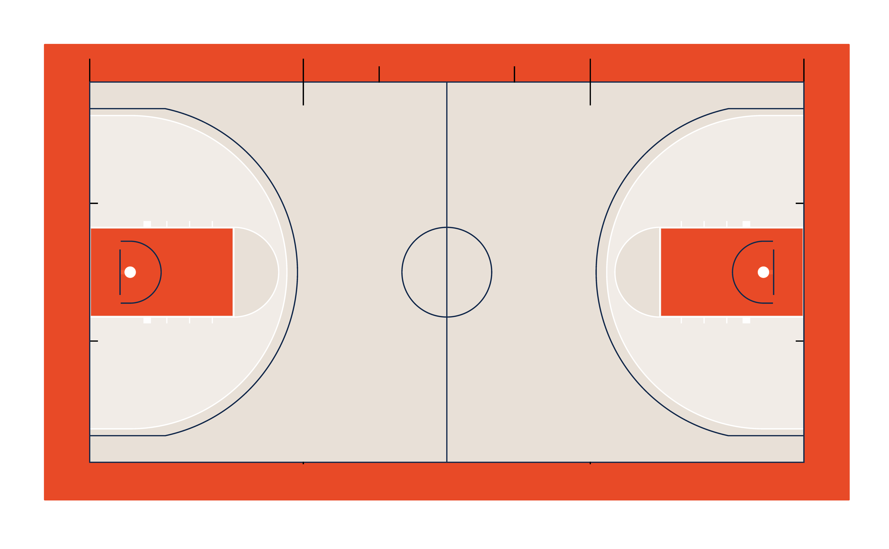
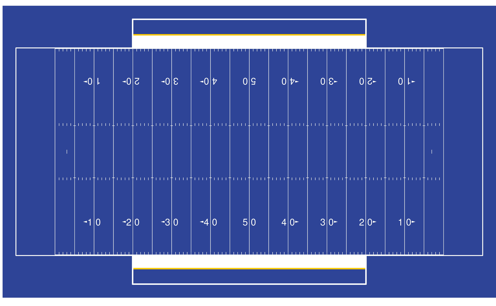

To run the following vignette, you’ll need the sportyR
package loaded into your workspace.
Customizing a plot is easy as can be with sportyR. Say
we want to customize a college basketball court to look like Lou Henson
Court at the University of Illinois at Urbana-Champaign. You can see
what it looks like here
{kind=link}
We won’t get an exact match with logos, floorboard color differentiation, or some markings, but we’ll get pretty close. Let’s start by finding out what colors we can change, and how we can change them:
# Find the colors for a college basketball court
cani_color_league_features("NCAA", "basketball")
#> Here are the viable plotting features to color for NCAA basketball:
#>
#> plot_background
#> defensive_half_court
#> offensive_half_court
#> court_apron
#> center_circle_outline
#> center_circle_fill
#> division_line
#> endline
#> sideline
#> two_point_range
#> three_point_line
#> painted_area
#> lane_boundary
#> free_throw_circle_outline
#> free_throw_circle_fill
#> free_throw_circle_dash
#> lane_space_mark
#> inbounding_line
#> substitution_line
#> baseline_lower_defensive_box
#> lane_lower_defensive_box
#> team_bench_line
#> restricted_arc
#> backboard
#> basket_ring
#> netGreat, all set. It looks like the following should work:
NOTE: not all of the arguments below are needed, however all are shown to display the flexibility with which the plots can be customized.
geom_basketball(
league = "ncaa",
color_updates = list(
offensive_half_court = "#e8e0d7",
defensive_half_court = "#e8e0d7",
court_apron = "#e84a27",
two_point_range = c("#e8e0d7", "#ffffff66"),
center_circle_fill = "#e8e0d7",
painted_area = c("#e84a27", "#ffffff00"),
free_throw_circle_fill = "#e8e0d7",
sideline = "#13294b",
endline = "#13294b",
division_line = "#13294b",
center_circle_outline = "#13294b",
lane_boundary = c("#ffffff", "#ffffff00"),
three_point_line = c("#13294b", "#ffffff"),
free_throw_circle_outline = "#ffffff",
lane_space_mark = "#ffffff",
restricted_arc = "#13294b",
backboard = "#13294b"
)
)
Pretty good! You can do this for any of the surfaces offered by
sportyR. Here’s another example, this time drawing a blue
college football field:
# Create a blue football field
geom_football(
"ncaa",
color_updates = list(
field_apron = "#2e4597",
field_border = "#2e4597",
offensive_endzone = "#2e4597",
defensive_endzone = "#2e4597",
offensive_half = "#2e4597",
defensive_half = "#2e4597",
team_bench_area = "#2e4597"
)
)